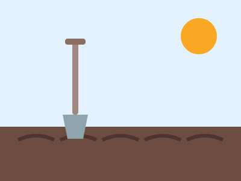
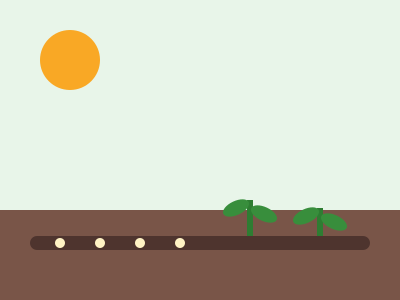
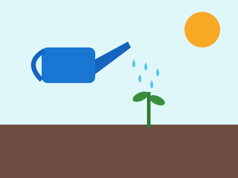
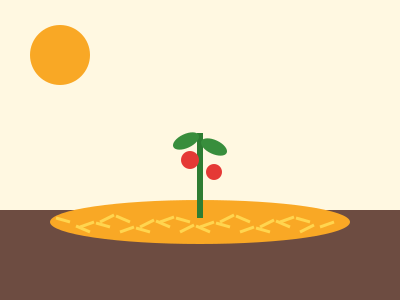
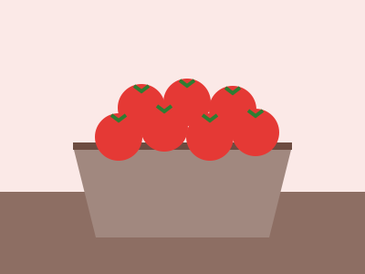

Réussir sa saison des pluies au potager
Cinq gestes simples, dans l'ordre, pour des légumes en bonne santé. Faites défiler la page : le menu en haut vous indique où vous êtes.
1. Préparer le sol

Ameublissez la terre sur 20 à 30 cm avec une bêche ou une houe : les racines s'enfoncent mieux et l'eau de pluie pénètre au lieu de ruisseler. Mélangez du compost mûr deux à trois semaines avant de semer.
2. Semer au bon moment

Semez quand les premières pluies sont bien installées. Règle simple : enterrez la graine à une profondeur de deux à trois fois sa taille. Les toutes petites graines (laitue, tomate) se couvrent à peine.
3. Arroser sans gaspiller

Même en saison des pluies, il y a des jours secs. Arrosez tôt le matin ou en fin de journée, au pied de la plante : l'eau s'évapore moins et les feuilles restent sèches, ce qui limite les maladies.
4. Pailler pour protéger

Étalez cinq centimètres de paille ou d'herbes sèches autour des plants. Le paillage garde l'humidité, freine les mauvaises herbes et protège le sol des fortes pluies. Laissez un petit vide autour de la tige.
5. Récolter à maturité

Cueillez le matin, quand il fait frais, des fruits bien colorés et fermes. Récolter souvent encourage la plante à produire davantage. Ne laissez pas les fruits trop mûrs sur le plant.